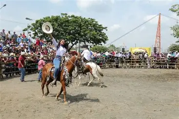
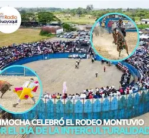
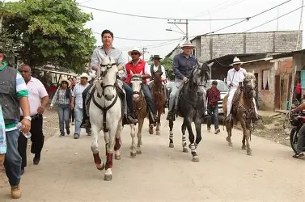
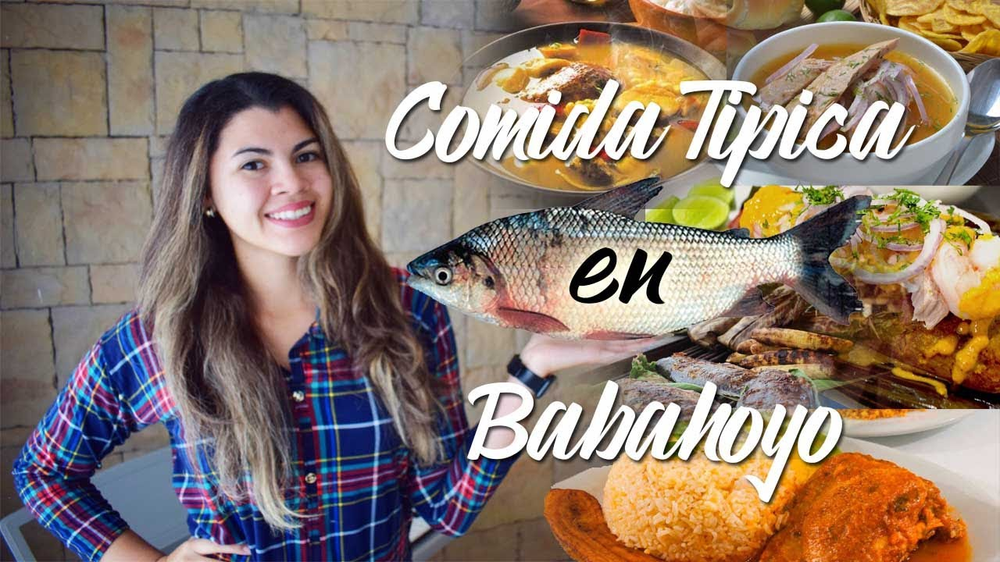
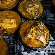
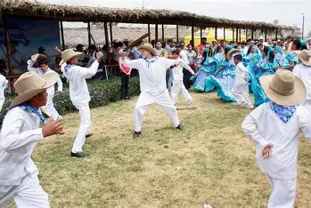

| Home | Galería | Situación geográfica | Costumbres | Sitios turísticos |
|---|
Babahoyo es una ciudad que respira tradición. Sus costumbres montubias se manifiestan en cada rincón, desde las cabalgatas que recorren sus calles hasta los amorfinos que se declaman con picardía y orgullo. Las fiestas patronales en honor a la Virgen de la Merced son una muestra viva de la fe y la identidad local, donde se combinan procesiones religiosas con danzas folclóricas, música típica y ferias artesanales. El Rodeo Montuvio de Pimocha, por ejemplo, es una celebración que reúne jinetes, músicos y familias enteras en torno a la cultura del campo costeño, con concursos de palo encebado, comidas típicas y exhibiciones de destreza ecuestre que fortalecen el sentido de pertenencia.
|  |  |  |
La gastronomía babahoyense también forma parte esencial de sus costumbres. Platos como el sancocho de bocachico, el bollo de pescado, la cazuela de mariscos y el ayampaco son preparados con recetas heredadas de generación en generación. En los mercados y ferias locales, es común ver a las familias compartiendo estos sabores mientras conversan sobre la cosecha, el clima o las noticias del pueblo. Las mujeres suelen vestir con trajes típicos durante las celebraciones, y los hombres montuvios lucen sombreros de paja y machetes como símbolo de trabajo y respeto por la tierra.
|  |  |
La tradición oral en Babahoyo es rica en leyendas, cuentos campesinos y refranes que se transmiten en reuniones familiares o encuentros comunitarios. Los amorfinos, versos populares cargados de humor y picardía, son recitados en concursos y celebraciones como parte del folclore montuvio. Además, las danzas típicas y presentaciones artísticas en plazas y parques reflejan el orgullo por las raíces culturales. Estas expresiones no solo entretienen, sino que educan y preservan la memoria colectiva de la ciudad.
